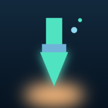
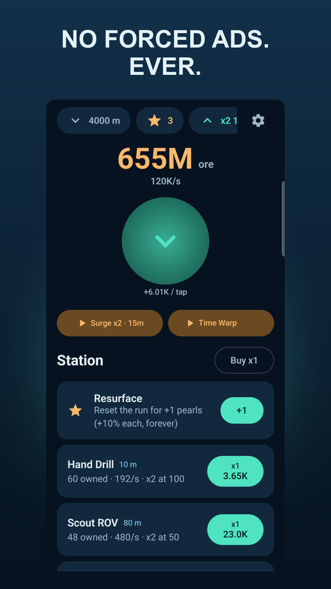
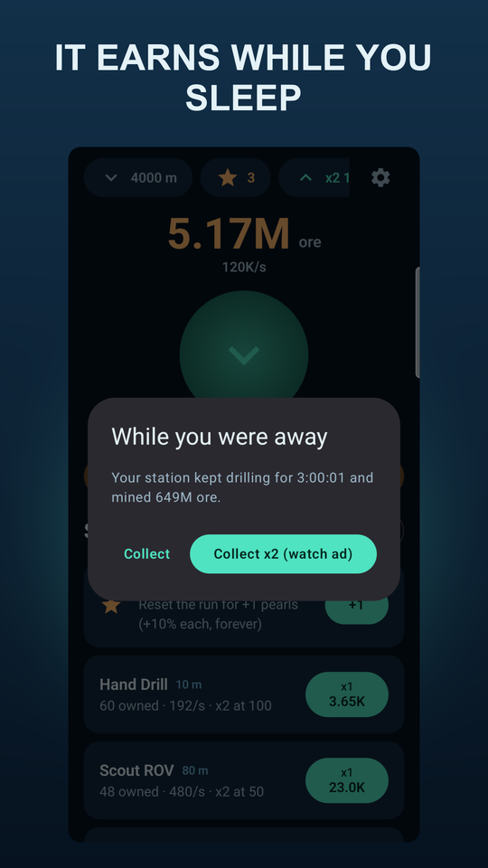
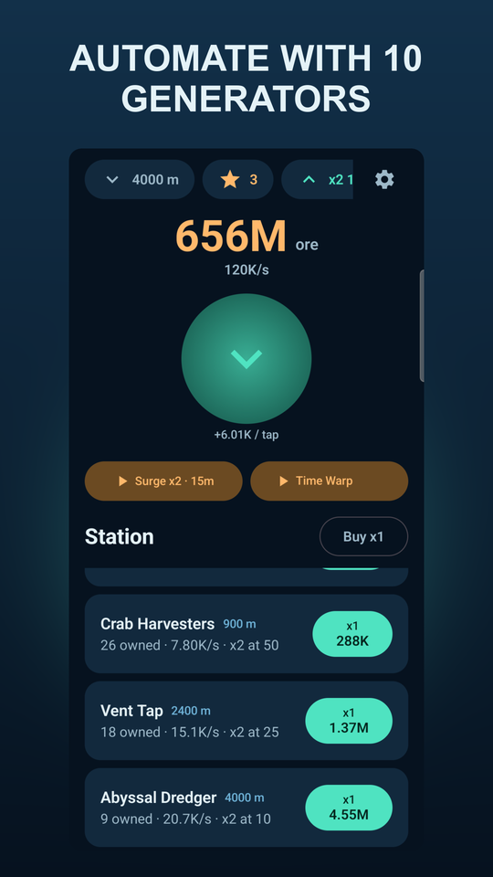

DeepDrill
A deep-sea idle mining game. Tap the drill, automate the abyss,
and keep earning ore while the app is closed.
No interstitial jumping in mid-tap, no “watch this to keep playing”. Every ad in DeepDrill is a button you choose to press, and it always pays you back.
Currently in closed testing — the store page opens once the first release is public.
What you actually do
Tap, buy, automate
Start with a rusty hand drill and a lot of optimism. Buy generators, watch them pay for the next one, and stop tapping because the station runs itself.
It earns while you sleep
Your station keeps drilling when the app is closed — up to four hours of production waiting when you come back. No energy timers, no “come back in 3 hours” gates.
Every 10th one counts double
Owning 10, 25, 50, 100 and 200 of a generator doubles its output each time. There is always a next number worth reaching for.
Resurface for pearls
Reset the run and keep pearls forever — each one adds 10% production to every future run. The second dive is always faster than the first.
Three buttons, never a wall
Double your offline haul, run a 15-minute Surge, or warp 30 minutes of production forward. All optional, all rewarded. One banner lives in settings, outside the game.
Offline, no account
No sign-in, no cloud save, no profile. Your progress is a file on your phone. Analytics stay off unless you agree to them.
Screens



How deep it goes
- Hand Drill10 m
- Scout ROV80 m
- Coastal Rig300 m
- Crab Harvesters900 m
- Vent Tap2 400 m
- Abyssal Dredger4 000 m
- Trench Excavator6 500 m
- Leviathan Driller8 500 m
- Hadal Station10 000 m
- The Core Bore11 000 m